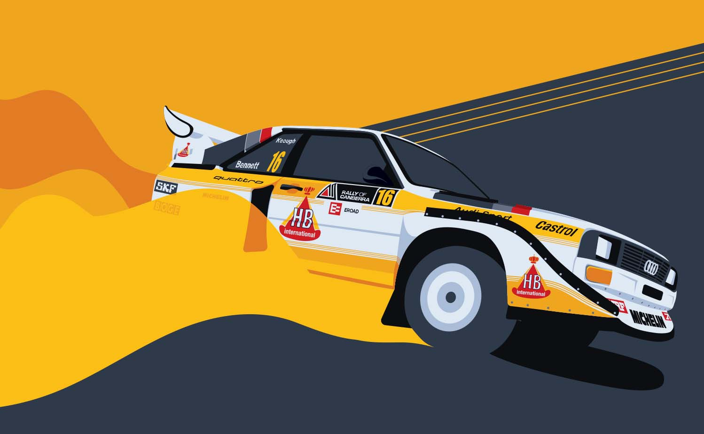
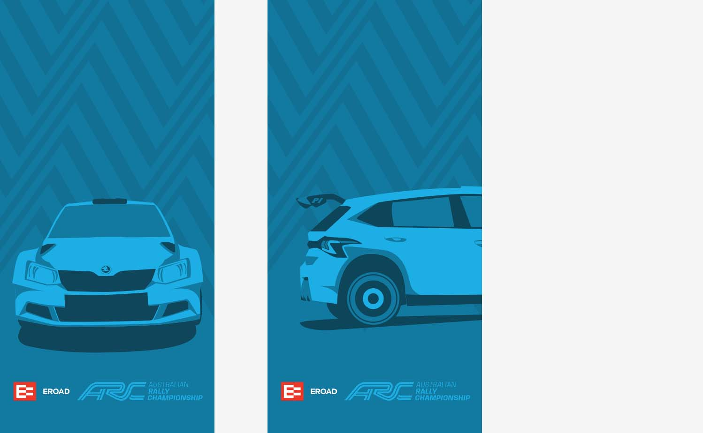

Capturing the war memorial within a symbol was difficult as there
are many sensitive factors to be considered. The premise of the design was to work
with the poem by John McCrae In Flanders Fields, particularly focusing on the imagery
in first line through the use of poppies scattered between the crosses.
These variations show the flexiblity of the symbol. Working to make the
poppies visable in the black and white variation was a challenge however
I think the result is effective.

This is the box dieline which includes the use of bleeds,
cut and fold lines. The dieline shows how the whole packaging
works together to create a strong identity.
This is the box dieline which includes the use of bleeds,
cut and fold lines. The dieline shows how the whole packaging
works together to create a strong identity.